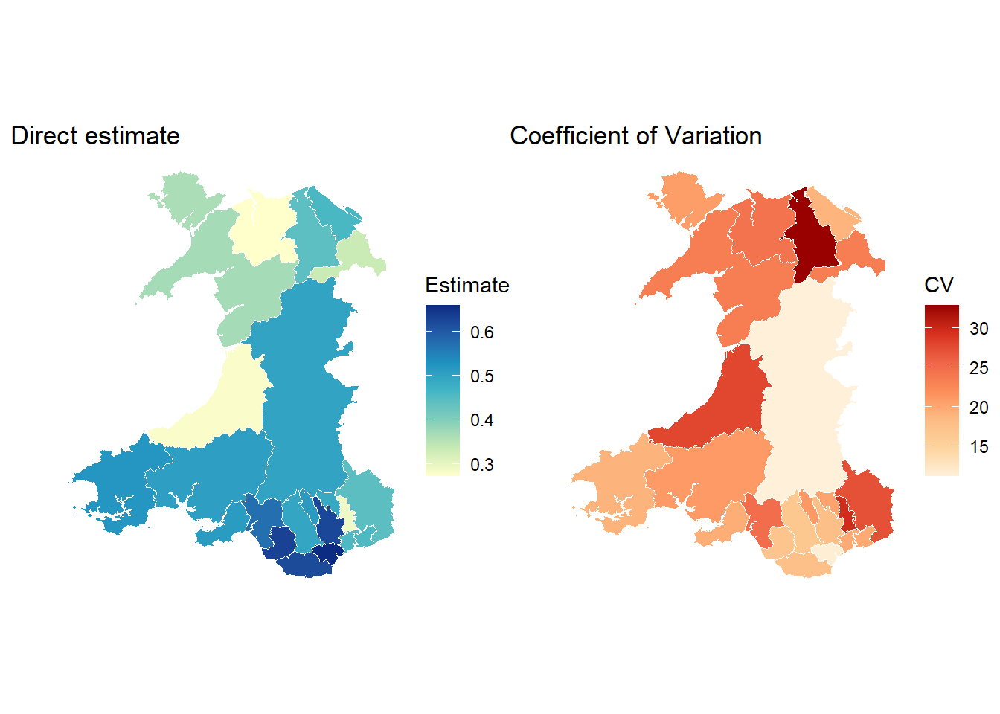
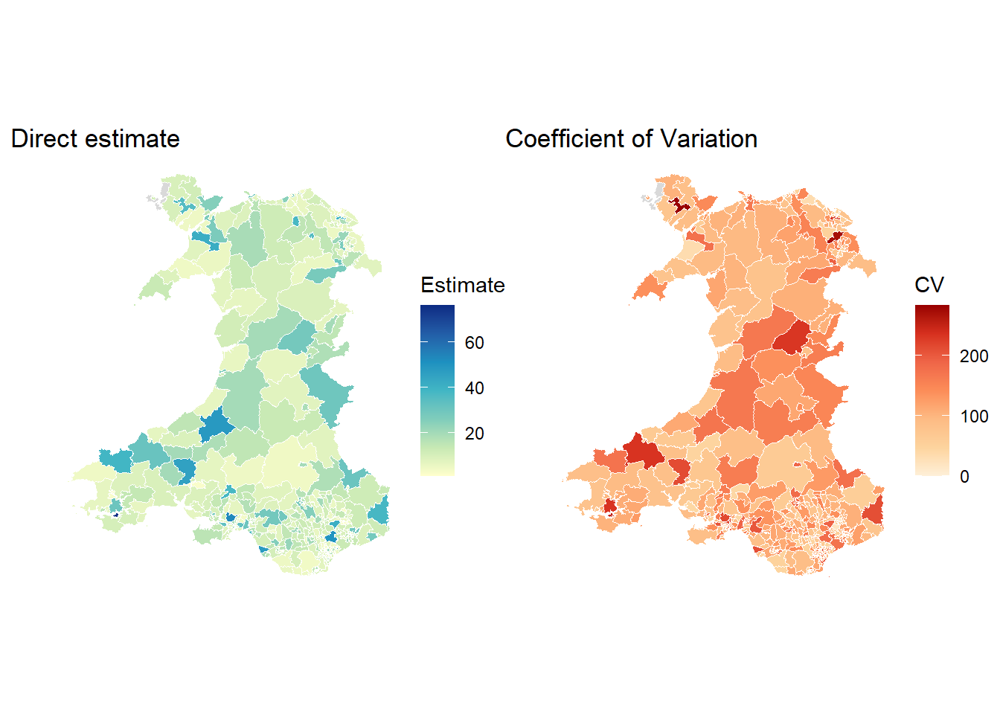
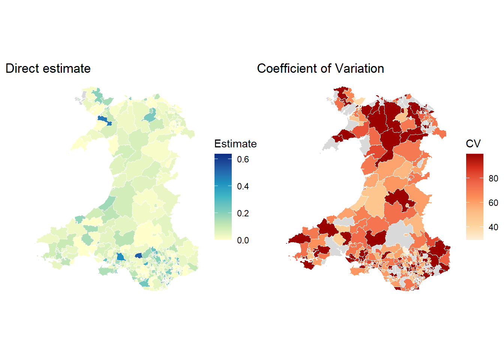

# Download pre-generated analysis-ready files into a temp folder
library(dplyr)
library(readr)
library(stringr)
library(tidyr)
library(sae)
library(sf)
library(ggplot2)
library(patchwork)
# Load analysis-ready data
zip_tmp <- tempfile(fileext = ".zip")
url <- "https://raw.githubusercontent.com/shaunhoang/tutorial-site/main/data/tutorial-clean-data.zip"
download.file(url, zip_tmp, mode = "wb")
unzip(zip_tmp, exdir = tempdir())
base_path <- file.path(tempdir(), "clean")
# Load shapefiles for plotting
boundary_zip <- tempfile(fileext = ".zip")
boundary_url <- "https://raw.githubusercontent.com/shaunhoang/tutorial-site/main/data/tutorial-boundaries.zip"
download.file(boundary_url, boundary_zip, mode = "wb")
unzip(boundary_zip, exdir = tempdir())
msoa_boundaries <- st_read(
file.path(tempdir(), "boundaries", "boundaries-msoa.geojson"),
quiet = TRUE
) |>
rename(domain_id = MSOA21CD) |>
filter(str_starts(domain_id, "W"))
la_boundaries <- st_read(
file.path(tempdir(), "boundaries", "boundaries-ltla.geojson"),
quiet = TRUE
) |>
rename(domain_id = LAD21CD) |>
filter(str_starts(domain_id, "W"))
# Create master lists of MSOAs and LAs
msoa_master_list <- read_csv(
file.path(base_path, "domain_sizes_adult_msoa.csv"),
show_col_types = FALSE
) |>
dplyr::select(domain_id, domain_name) |>
distinct()
la_master_list <- read_csv(
file.path(base_path, "domain_sizes_population_la.csv"),
show_col_types = FALSE
) |>
dplyr::select(domain_id, domain_name) |>
distinct()Direct Estimation
This workbook focuses on walk_weekly. We first produce the direct estimates, then evaluate whether those direct estimates are complete and precise enough to report. The same direct-estimation checks are then repeated for the other indicators, but their code is hidden so the page stays centred on the worked example.
1 Direct Estimator and Sampling Variances
The estimator should match the information available in the survey file and the estimand definition.
| Scenario | Estimator | Formula | When to use |
|---|---|---|---|
| Known Domain Sizes; has grossing weight | Horvitz-Thompson estimator | \(\hat{\theta}_d^{DIR}=\frac{\sum_{i\in s_d}w^G_{di}y_{di}}{N_d}\) | Anchors estimates to true domain size and gives design-unbiased levels; required for estimating counts or totals, but equally valid for means or proportions |
| Unknown Domain Sizes; only analysis weights | Hájek estimator | \(\hat{\theta}_d^{DIR}=\frac{\sum_{i \in s_d}w_{di}^Ay_{di}}{\sum_{i \in s_d}w^A_{di}}\) | Can only be used for estimating means or proportions when only using analysis weights and no reliable domain size is available |
| Unknown Domain Sizes; no survey weights provided | Unweight sample mean | \(\hat{\theta}_d^{DIR}=\frac{\sum_{i \in s_d}y_{di}}{n_d}\) | The simplest form of direct estimator, likely biased if survey sampling is not random, and imprecise when \(n_d\) is too low |
Here, the direct estimate \(\hat{\theta}_d^{DIR}\) is for domain \(d\) with sample size \(n_d\) and domain size \(N_d\), if known.
Direct estimates are paired with estimated sampling variances, telling us how much uncertainty comes from observing only a sample within each domain. In practice, the variance depends on the estimator, weight scale, and survey design information available.
2 Next Step
Use the direct estimates and sampling variances to decide whether direct reporting is enough, or whether model-based SAE is needed.
| Scenario | Next step |
|---|---|
| Most domains have usable sample sizes and acceptable uncertainty | Direct estimates may be enough for reporting. |
| Many domains have no sample, or sampling variances are missing, zero, or unreasonable | Revisit the domain choice, estimand, or input data before modelling. |
| Direct estimates are imprecise, spatial effects matter, or uncertainty needs to be reported as probabilities | Fit a Bayesian Area-Level SAE with Spatial model to borrow strength from covariates and neighbouring areas. |
3 Code Implementation
Tip
Use sae::direct() to calculate direct estimates by domain. It selects an estimation method automatically based on the provided inputs:
- Horvitz-Thompson estimator: pass
sweightand pre-aggregateddomsize. - Hajek ratio estimator: pass
sweight, anddomsizeequals sum of weights as pseudo-domain-size. - If neither is provided, it defaults to unweighted sample mean.
3.1 Frequent walking behaviour
walk_weekly estimates the proportion of people who walk at least weekly by Local Authority.
Load the walk_weekly survey indicator and its matching total population LA domain-size file.
survey_indicator_walk <- read_csv(
file.path(base_path, "ind_weight_walk_weekly.csv"),
show_col_types = FALSE
) |>
filter(!is.na(indicator), !is.na(weight), !is.na(domain_id))
domain_sizes_walk <- read_csv(
file.path(base_path, "domain_sizes_population_la.csv"),
show_col_types = FALSE
) |>
dplyr::select(domain_id, domain_size) |>
as.data.frame()The indicator has matching domain sizes (i.e., total population by LA), so we use a Horvitz-Thompson direct estimator, simply by specifying domsize in the sae::direct() function call
dir_est_walk <- sae::direct(
y = survey_indicator_walk$indicator,
dom = survey_indicator_walk$domain_id,
sweight = survey_indicator_walk$weight,
domsize = domain_sizes_walk
)
dir_est_walk$Var <- dir_est_walk$SD^2
dir_est_walk$Lower <- dir_est_walk$Direct - 1.96 * dir_est_walk$SD
dir_est_walk$Upper <- dir_est_walk$Direct + 1.96 * dir_est_walk$SD
head(dir_est_walk) Domain SampSize Direct SD CV Var Lower
1 W06000001 72 0.3628000 0.07515335 20.71481 0.005648025 0.2154995
2 W06000002 81 0.3679799 0.08639736 23.47882 0.007464504 0.1986411
3 W06000003 71 0.2715848 0.06625086 24.39417 0.004389176 0.1417332
4 W06000004 53 0.4409134 0.14462204 32.80055 0.020915534 0.1574542
5 W06000005 86 0.4597774 0.08724631 18.97577 0.007611919 0.2887746
6 W06000006 66 0.3316487 0.07798293 23.51371 0.006081337 0.1788022
Upper
1 0.5101006
2 0.5373188
3 0.4014365
4 0.7243726
5 0.6307802
6 0.48449533.2 Mean commute distance
The indicator commute_distance has no known worker domain-size file, so the sum of analysis weights in each sampled MSOA is used as a pseudo domain size because sae::direct() requires a domsize. This is a common workaround when working with sae and the Hajek estimator is called for.
survey_indicator <- read_csv(
file.path(base_path, "ind_weight_commute_distance.csv"),
show_col_types = FALSE
) |>
filter(!is.na(indicator), !is.na(weight), !is.na(domain_id))
domain_sizes_pseudo <- survey_indicator |>
group_by(domain_id) |>
summarise(domain_size = sum(weight), .groups = "drop") |>
as.data.frame()
dir_est_commute <- sae::direct(
y = survey_indicator$indicator,
dom = survey_indicator$domain_id,
sweight = survey_indicator$weight,
domsize = domain_sizes_pseudo,
replace = TRUE
)
dir_est_commute$Var <- dir_est_commute$SD^2
dir_est_commute$Lower <- dir_est_commute$Direct - 1.96 * dir_est_commute$SD
dir_est_commute$Upper <- dir_est_commute$Direct + 1.96 * dir_est_commute$SD
head(dir_est_commute) Domain SampSize Direct SD CV Var Lower
6 W02000001 11 9.699559 10.013940 103.24118 100.27899 -9.927763
4 W02000002 11 11.214544 9.461629 84.36927 89.52243 -7.330249
2 W02000003 11 10.648435 11.739061 110.24213 137.80556 -12.360125
5 W02000005 12 25.326154 36.639024 144.66872 1342.41806 -46.486333
7 W02000006 17 35.131997 99.311303 282.68049 9862.73497 -159.518157
3 W02000007 12 9.908802 7.527014 75.96291 56.65594 -4.844146
Upper
6 29.32688
4 29.75934
2 33.65700
5 97.13864
7 229.78215
3 24.661753.3 Dissatisfaction with bus service
The indicator poor_bus_satisfaction uses the adult MSOA domain-size file, so it is also estimated with a Horvitz-Thompson direct estimator.
survey_indicator_bus <- read_csv(
file.path(base_path, "ind_weight_poor_bus_satisfaction.csv"),
show_col_types = FALSE
) |>
filter(!is.na(indicator), !is.na(weight), !is.na(domain_id))
msoa_adult_domain_sizes <- read_csv(
file.path(base_path, "domain_sizes_adult_msoa.csv"),
show_col_types = FALSE
) |>
dplyr::select(domain_id, domain_size) |>
as.data.frame()
dir_est_bus <- sae::direct(
y = survey_indicator_bus$indicator,
dom = survey_indicator_bus$domain_id,
sweight = survey_indicator_bus$weight,
domsize = msoa_adult_domain_sizes
)
dir_est_bus$Var <- dir_est_bus$SD^2
dir_est_bus$Lower <- dir_est_bus$Direct - 1.96 * dir_est_bus$SD
dir_est_bus$Upper <- dir_est_bus$Direct + 1.96 * dir_est_bus$SD
head(dir_est_bus) Domain SampSize Direct SD CV Var Lower
7 W02000001 56 0.01753649 0.01746546 99.59493 0.0003050422 -0.01669580
2 W02000002 50 0.19884501 0.13076212 65.76083 0.0170987318 -0.05744875
6 W02000003 42 0.13140496 0.05029407 38.27411 0.0025294938 0.03282858
408 W02000004 0 NA NA NA NA NA
1 W02000005 54 0.15764472 0.05935876 37.65350 0.0035234620 0.04130156
8 W02000006 46 0.03591922 0.03582941 99.74995 0.0012837466 -0.03430642
Upper
7 0.05176879
2 0.45513876
6 0.22998134
408 NA
1 0.27398789
8 0.106144873.4 Evaluation
Direct estimation itself is prone to be insufficient: some domains may have no sampled observations at all especially when estimating across very small areas, while others may have so few data points that their estimates are not reliable.
To assess the quality of the direct estimates, first check whether any domains lack a direct estimate because they have no samples.
Next, assess whether the available direct estimates are precise enough to report. Two uncertainty metrics are especially important:
median_cv: the typical coefficient of variation, calculated as the standard error divided by the estimate. Values above 100% indicate that the typical standard error is larger than the estimate itself.median_ci_width: the typical width of the 95% confidence interval, expressed in the original units.
We define custom functions to summarise and plot these diagnostics.
summarise_direct_estimates <- function(result, master_domains) {
domains_no_data <- master_domains |>
anti_join(
result |> transmute(domain_id = Domain),
by = "domain_id"
)
result |>
summarise(
target_domain_n = nrow(master_domains),
domains_with_direct_estimate = n(),
domains_with_no_data = nrow(domains_no_data),
median_sample_size = median(SampSize, na.rm = TRUE),
median_cv = median(CV, na.rm = TRUE),
median_ci_width = median(Upper - Lower, na.rm = TRUE)
) |>
pivot_longer(
cols = everything(),
names_to = "diagnostic",
values_to = "value"
)
}
plot_direct_estimates <- function(result, boundaries) {
map_data <- boundaries |>
left_join(
result,
by = c("domain_id" = "Domain")
)
estimate_map <- ggplot(map_data) +
geom_sf(aes(fill = Direct), colour = "white", linewidth = 0.25) +
scale_fill_distiller(palette = "YlGnBu", direction = 1, na.value = "grey85") +
labs(
fill = "Estimate",
title = "Direct estimate"
) +
theme_void()
cv_map <- ggplot(map_data) +
geom_sf(aes(fill = CV), colour = "white", linewidth = 0.25) +
scale_fill_distiller(palette = "OrRd", direction = 1, na.value = "grey85") +
labs(
fill = "CV",
title = "Coefficient of Variation"
) +
theme_void()
estimate_map + cv_map
}Summarise and plot the diagnostics of the walk_weekly direct estimates.
summarise_direct_estimates(dir_est_walk, la_master_list)# A tibble: 6 × 2
diagnostic value
<chr> <dbl>
1 target_domain_n 22
2 domains_with_direct_estimate 22
3 domains_with_no_data 0
4 median_sample_size 79
5 median_cv 20.5
6 median_ci_width 0.370plot_direct_estimates(dir_est_walk,la_boundaries)
Summarise and plot the diagnostics of the commute_distance direct estimates.
summarise_direct_estimates(dir_est_commute, msoa_master_list)# A tibble: 6 × 2
diagnostic value
<chr> <dbl>
1 target_domain_n 408
2 domains_with_direct_estimate 407
3 domains_with_no_data 1
4 median_sample_size 9
5 median_cv 106.
6 median_ci_width 40.1plot_direct_estimates(dir_est_commute, msoa_boundaries)
Summarise and plot the diagnostics of the poor_bus_satisfaction direct estimates.
summarise_direct_estimates(dir_est_bus, msoa_master_list)# A tibble: 6 × 2
diagnostic value
<chr> <dbl>
1 target_domain_n 408
2 domains_with_direct_estimate 408
3 domains_with_no_data 0
4 median_sample_size 25
5 median_cv 72.1
6 median_ci_width 0.164plot_direct_estimates(dir_est_bus,msoa_boundaries)
Overall, the walk_weekly and poor_bus_satisfaction direct estimates are useful as inputs and are relatively stable because the indicator is estimated at local authority level with known population domain sizes.
By contrast, the estimates for commute_distance rely only on weights and have much higher relative uncertainty. A remedy is to redefine the estimand associated with commute_distance so that it applies to a population with known domain sizes, such as all adults, rather than a subgroup whose MSOA totals may be unavailable. However, this would essentially change what is being measured.
In general, the higher the sample size per domain, the more stable the estimates. Moreover, when domain sizes are known, precision is also higher. Since model-based estimation methods work on these direct estimates and variances, having a solid base is essential before moving forward.